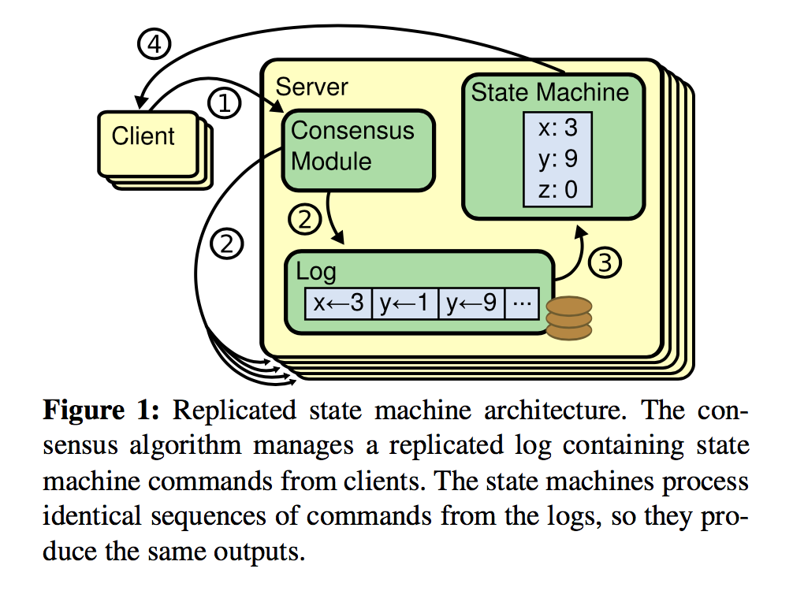
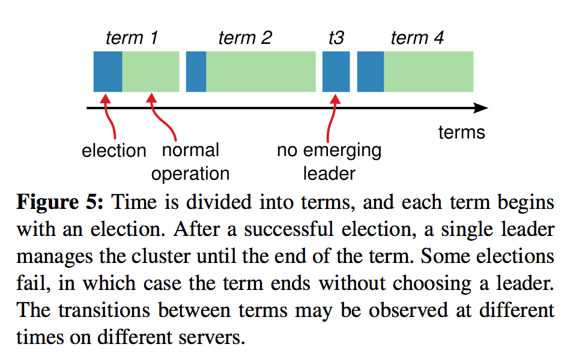
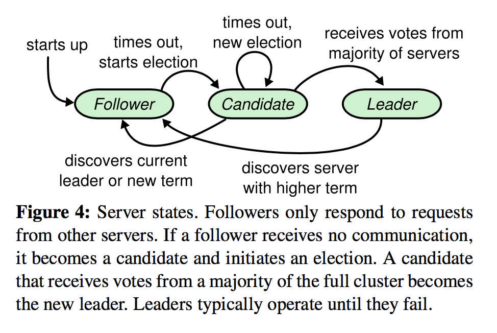
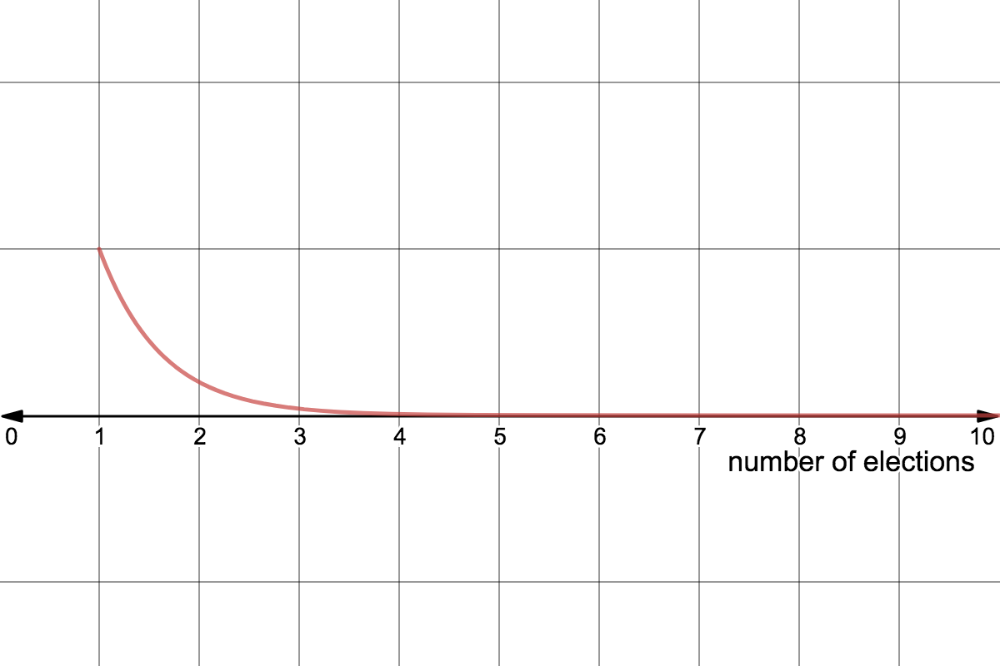
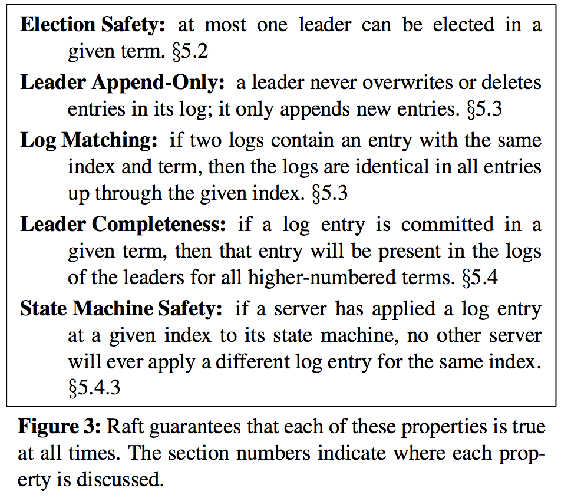
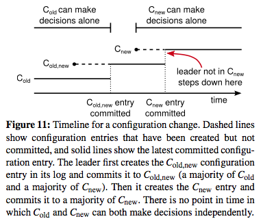

In Search of an Understandable Consensus Algorithm (Extended Version)
AKA: The Raft Paper
Chris Hiestand, Systems Consultant at Kistek LLC
State Machine
Stores state on a single node. How do you make this robust to failure?
Replicated State Machine
Paxos, industry standard 1989 - ?
There are significant gaps between the description of the Paxos algorithm and the needs of a real-world system... the final system will be based on an un- proven protocol- Chubby (distributed locking algorithm) Authors
More Paxos Trashtalk
“The dirty little secret of the NSDI community is that at most five people really, truly understand every part of Paxos;-).”- NSDI reviewer
State of Paxos
There is no consensus on how to implement paxos
Algorithm Priorities
- Space Complexity
- Time Complexity
- Throughput
- Scalability
- Reliability
- Cool Factor
Raft Algorithm Priorities
- Understandable
- Correct
- Complete
- Readily Used
- Extendible
Minimize State Space
- Handle multiple problems with a single mechanism
- Handle multiple problems with a single mechanism
- Eliminate special cases
- Maximize coherence
- Minimize nondeterminism
Problem Decomposition
- Leader election
- Log replication
- Safety
Vocabulary
log: where serialized writes are stored
term: monotomically increasing, equal to number of elections, current term sent with all RPCs
log index: monotomically increasing, number of particular log entry
match index: within leader's state for each follower, most recent log index stored by both the leader and follower
next index: within leader's state for each follower, next log index of entry leader will send to that follower
Term

Odd Deployment Topologies
| cluster count | failure tolerance | majority/quorum | ||
|---|---|---|---|---|
| 3 | - | 1 | = | 2 |
| 5 | - | 2 | = | 3 |
| 7 | - | 3 | = | 4 |
source: https://github.com/coreos/etcd/blob/master/raft/README.md
Server States
note: All members have root/admin level authority/trust in all states
Leader Election
The leader is the only member of the cluster who can serve client reads or writes
Any member can become a leader nearly anytime in common scenarios
Follower Until
- Leader timeout → Candidate (new term)
Candidate Until
- Election win → Leader
- Election timeout → Candidate (new term)
- Election lost (AppendEntriesRPC s.t. remote term >= local term) → Follower
Leader Until
- New term discovered (remote term > local term) → Follower
Randomized Election Timeouts
Leader Election - Probability Trend of Repeated Collisions
Normal Log Replication
Missing and Extraneous Log Entries
Safety
leader has complete ownership of the replicated log
Safety - Leadership Requirement
"Leader Completeness" means there can be no leader with stale logs: Example
Committing entries from previous terms
Leader only commits entry from previous term if it has that entry in its own log
Raft RPCs for Basic Functionality
- RequestVote
- AppendEntries
RPCs for Extended Functionality
- InstallSnapshot
Membership Changes
Three Phases
- Old Configuration
- Joint Configuration (Old + New)
- New Configuration
Joint Configuration
Consensus requires separate majorities from both the old and new configurations
Preventing Removed Server Problems
To prevent this problem, servers disregard RequestVote RPCs when they believe a current leader exists. Specifically, if a server receives a RequestVote RPC within the minimum election timeout of hearing from a current leader, it does not update its term or grant its vote...
Snapshots
- Each member generates its own snapshot
- A snapshot is the contents of the state machine + metadata at a specific log index, the log index and all log entries before it are then discarded
- InstallSnapshot RPC used to catch up behind followers
- Followers may make snapshots indepdent of leader because of log safety
Clients only talk to leader
This means that all writes and reads must go through the leader
Writes AND READS must have consensus verified before leader replies OK to client
Understandability
Teaching experiment - students learn paxos and raft and are quizzed
Experiment setup to minimize bias
Correctness
Various Proofs
Performance
Similar to Paxos
Leaves additional optimizations to implementers
etcd standard reads
- Linearizable read-only queries served by both the leader and followers
- leader checks with quorum and bypasses Raft log before processing read-only queries
- followers asks leader to get a safe read index before processing read-only queries
source: https://github.com/coreos/etcd/blob/master/raft/README.md
etcd lease-based reads
- Lease-based linearizable read-only queries served by both the leader and followers
- leader bypasses Raft log and processing read-only queries locally
- followers asks leader to get a safe read index before processing read-only queries
- this approach relies on the clock of the all the machines in raft group
source: https://github.com/coreos/etcd/blob/master/raft/README.md
etcd "optional enhancements" to raft
- Optimistic pipelining to reduce log replication latency
- Flow control for log replication
- Batching Raft messages to reduce synchronized network I/O calls
- Batching log entries to reduce disk synchronized I/O
- Writing to leader's disk in parallel
- Internal proposal redirection from followers to leader
- Automatic stepping down when the leader loses quorum
source: https://github.com/coreos/etcd/blob/master/raft/README.md
Consul Read Modes
- default - leader may independently services all reads with timed lease on leadership
- consistent - raft standard (leader verifies with majority)
- stale - any node may independently serve any (arbitrarily stale) read
source: https://www.consul.io/docs/internals/consensus.html#consistency-modes
Consul Real World Performance
Consul: 100-9999 TPS
Although Consul is not designed to be a high-throughput write system, it should handle on the order of hundreds to thousands of transactions per second depending on network and hardware configuration.
source: https://www.consul.io/docs/internals/consensus.html#raft-protocol-overview
Thank You for Listening!
What is the consensus on Raft?